<title>kane-qe v2 Field Guide</title>
<link rel="preconnect" href="https://fonts.googleapis.com">
<link rel="preconnect" href="https://fonts.gstatic.com" crossorigin>
<link href="https://fonts.googleapis.com/css2?family=Bricolage+Grotesque:opsz,wght@12..96,500;12..96,700&family=Source+Sans+3:ital,wght@0,400;0,600;1,400&family=IBM+Plex+Mono:wght@400;500&display=swap" rel="stylesheet">
<style>
/* A field manual for a mod that watches. Purple is kane's own accent (the band's chips and
   buttons); yellow is assurance and nothing else; orange is an untested change; mint, coral and
   cyan are passed, failed and running, as on the band. */
:root {
  --bg: #f6f5f9;
  --surface: #ffffff;
  --ink: #1c1a26;
  --muted: #5c5870;
  --rule: #dfdbea;
  --accent: #6a3fd1;
  --accent-soft: #ece6fd;
  --assure: #8a6500;
  --warn: #b85400;
  --run: #1f6fa8;
  --pass: #17845a;
  --fail: #c8323f;
  --code-bg: #efedf5;
  --term: #15141c;
  --display: "Bricolage Grotesque", "Avenir Next", "Segoe UI", sans-serif;
  --body: "Source Sans 3", "Helvetica Neue", Arial, sans-serif;
  --mono: "IBM Plex Mono", "SFMono-Regular", Menlo, Consolas, monospace;
  --measure: 68ch;
}
@media (prefers-color-scheme: dark) {
  :root:not([data-theme="light"]) {
    --bg: #131219; --surface: #1c1a25; --ink: #ecebf3; --muted: #a7a2ba; --rule: #312d40;
    --accent: #b388ff; --accent-soft: #2c2350; --assure: #ffd66b; --warn: #ffa45c; --run: #9fdcff; --pass: #7fe3b5; --fail: #ff8b94;
    --code-bg: #25222f; color-scheme: dark;
  }
}
:root[data-theme="dark"] {
  --bg: #131219; --surface: #1c1a25; --ink: #ecebf3; --muted: #a7a2ba; --rule: #312d40;
  --accent: #b388ff; --accent-soft: #2c2350; --assure: #ffd66b; --warn: #ffa45c; --run: #9fdcff; --pass: #7fe3b5; --fail: #ff8b94;
  --code-bg: #25222f; color-scheme: dark;
}
* { box-sizing: border-box; }
body { background: var(--bg); color: var(--ink); font: 400 17px/1.6 var(--body); padding-inline: 16px; padding-block: 0 64px; margin: 0; }
main { max-width: 1080px; margin-inline: auto; display: grid; gap: 56px; }
h1, h2, h3 { font-family: var(--display); text-wrap: balance; line-height: 1.15; margin: 0; }
h1 { font-size: clamp(2.2rem, 5vw, 3.4rem); font-weight: 700; letter-spacing: -0.01em; }
h2 { font-size: 1.75rem; font-weight: 700; }
h3 { font-size: 1.12rem; font-weight: 700; }
p { margin: 0; max-width: var(--measure); }
a { color: var(--accent); }
code, kbd, .mono { font-family: var(--mono); font-size: 0.86em; }
code { background: var(--code-bg); padding: 0.1em 0.35em; border-radius: 4px; }
.eyebrow { font: 600 0.78rem/1 var(--body); letter-spacing: 0.12em; text-transform: uppercase; color: var(--accent); }
section { display: grid; gap: 20px; min-width: 0; }
.lede { font-size: 1.2rem; color: var(--muted); }
.note { color: var(--muted); font-size: 0.92rem; }

header.top { padding-block: 28px 8px; display: grid; gap: 18px; }
.nav { padding-block: 22px 0; display: flex; gap: 18px; flex-wrap: wrap; font-size: 0.92rem; }
.nav a { text-decoration: none; }
.nav a[aria-current="page"] { color: var(--ink); font-weight: 600; }

/* a band drawn in text, as it sits above the prompt */
.bandtext { background: var(--term); color: #e9e7f2; border-radius: 10px; padding: 14px 16px; font: 500 0.88rem/1.55 var(--mono); overflow-x: auto; white-space: pre; border: 1px solid var(--rule); }
.bandtext .chip { background: #2c2350; color: #b388ff; font-weight: 600; }
.bandtext .idle { background: #1c1a2b; color: #8480a3; }
.bandtext .btn { color: #9fc6ff; font-weight: 600; }
.bandtext .a { color: #ffd66b; } .bandtext .d { color: #8480a3; } .bandtext .p { color: #7fe3b5; } .bandtext .f { color: #ff8b94; } .bandtext .r { color: #9fdcff; } .bandtext .w { color: #ffa45c; }
.bandtext .m { color: #8d7af6; }

/* video + chapters */
.player { display: grid; grid-template-columns: minmax(0, 1fr) 300px; gap: 20px; align-items: start; }
@media (max-width: 860px) { .player { grid-template-columns: 1fr; } }
video { width: 100%; max-width: 100%; border-radius: 10px; border: 1px solid var(--rule); background: #111; display: block; }
.chapters { list-style: none; margin: 0; padding: 0; display: grid; gap: 4px; max-height: 560px; overflow-y: auto; }
.chapters button { all: unset; cursor: pointer; display: grid; grid-template-columns: 52px 1fr; gap: 10px; padding: 9px 10px; border-radius: 8px; width: 100%; box-sizing: border-box; }
.chapters button:hover, .chapters button:focus-visible { background: var(--accent-soft); }
.chapters button:focus-visible { outline: 2px solid var(--accent); }
.chapters button[aria-current="true"] { background: var(--accent-soft); }
.chapters .t { font: 500 0.82rem/1.5 var(--mono); color: var(--accent); font-variant-numeric: tabular-nums; }
.chapters .c b { display: block; font-weight: 600; line-height: 1.3; }
.chapters .c span { color: var(--muted); font-size: 0.88rem; line-height: 1.35; display: block; margin-top: 2px; }

/* surfaces */
.surfaces { display: grid; grid-template-columns: repeat(auto-fit, minmax(300px, 1fr)); gap: 1px; background: var(--rule); border: 1px solid var(--rule); border-radius: 10px; overflow: hidden; }
.surfaces > div { background: var(--surface); padding: 18px; display: grid; gap: 6px; align-content: start; min-width: 0; }
.surfaces h3 { font-size: 1.02rem; }
.surfaces p { font-size: 0.95rem; color: var(--muted); }
.surfaces .where { font: 500 0.78rem/1.3 var(--mono); color: var(--accent); }

/* band states */
.states { display: grid; gap: 18px; }
.state { display: grid; grid-template-columns: 230px minmax(0, 1fr); gap: 20px; padding-top: 18px; border-top: 1px solid var(--rule); }
@media (max-width: 720px) { .state { grid-template-columns: 1fr; gap: 10px; } }
.state .name { display: grid; gap: 6px; align-content: start; }
.state .name p { font-size: 0.93rem; color: var(--muted); }
.state img { width: 100%; height: auto; border-radius: 8px; border: 1px solid var(--rule); display: block; background: var(--term); }

/* screens gallery */
.gallery { display: grid; grid-template-columns: repeat(auto-fit, minmax(300px, 1fr)); gap: 20px; }
figure { margin: 0; display: grid; gap: 8px; align-content: start; }
figure img { width: 100%; height: auto; border-radius: 10px; border: 1px solid var(--rule); background: var(--term); display: block; }
figcaption { font-size: 0.92rem; color: var(--muted); }
figcaption b { color: var(--ink); }

/* flows */
.flow { background: var(--surface); border: 1px solid var(--rule); border-radius: 10px; padding: 20px; display: grid; gap: 12px; min-width: 0; }
.flow pre.mermaid { margin: 0; overflow-x: auto; background: transparent; text-align: center; font-family: var(--body); white-space: normal; }
.flow pre.mermaid svg { font-family: var(--body); }
.flow p { font-size: 0.93rem; color: var(--muted); }
.flows { display: grid; grid-template-columns: repeat(auto-fit, minmax(420px, 1fr)); gap: 20px; }
@media (max-width: 520px) { .flows { grid-template-columns: 1fr; } }

/* tables */
.tablewrap { overflow-x: auto; border: 1px solid var(--rule); border-radius: 10px; background: var(--surface); }
table { border-collapse: collapse; width: 100%; font-size: 0.95rem; }
th, td { text-align: left; padding: 10px 14px; border-bottom: 1px solid var(--rule); vertical-align: top; }
th { font: 600 0.78rem/1.2 var(--body); letter-spacing: 0.08em; text-transform: uppercase; color: var(--muted); background: var(--code-bg); }
tr:last-child td { border-bottom: 0; }
td code { white-space: nowrap; }
.tag { font: 500 0.75rem/1 var(--mono); padding: 3px 7px; border-radius: 99px; border: 1px solid var(--rule); color: var(--muted); white-space: nowrap; }
.tag.live { color: var(--pass); border-color: currentColor; }

.two { display: grid; grid-template-columns: repeat(auto-fit, minmax(320px, 1fr)); gap: 20px; }
.callout { border-left: 3px solid var(--accent); padding: 4px 0 4px 16px; display: grid; gap: 6px; }
.callout.assure { border-color: var(--assure); }
.callout.warn { border-color: var(--warn); }
.rules { counter-reset: r; display: grid; grid-template-columns: repeat(auto-fit, minmax(240px, 1fr)); gap: 14px; }
.rules > div { background: var(--surface); border: 1px solid var(--rule); border-radius: 10px; padding: 16px; display: grid; gap: 6px; align-content: start; }
.rules > div::before { counter-increment: r; content: counter(r); font: 700 1.6rem/1 var(--display); color: var(--accent); }
.rules p { font-size: 0.94rem; color: var(--muted); }
footer { color: var(--muted); font-size: 0.9rem; border-top: 1px solid var(--rule); padding-top: 18px; }
@media (prefers-reduced-motion: reduce) { * { scroll-behavior: auto !important; } }
</style>

<main>
  <nav class="nav" aria-label="Pages">
    <a href="index.html" aria-current="page">Field Guide</a>
    <a href="explainer.html">Explained simply</a>
    <a href="https://github.com/LambdaTest/kane-claude-plugin">GitHub</a>
  </nav>
  <header class="top">
    <div class="eyebrow">Claude Code mod · kane-cli v16 · v2</div>
    <h1>kane-qe v2 Field Guide</h1>
    <p class="lede">A band above the prompt that watches kane-cli: what is running, the step it is on, what just failed and why, and how much of the requirements is proven. A pane for the detail. And a nudge, or a hold, when Claude changes code nobody has tested.</p>
    <div class="bandtext" aria-label="The band while a test runs"><span class="m">▄▀▄▄▀▄ </span>  <span class="chip"> running </span> <b>checkout_guest</b> <span class="d">44s</span> <span class="btn">[ Open ]</span>
<span class="m">▀▀▀▀▀▀▀▀</span> Fill the shipping address
<span class="m">▀▀▀▀▀▀▀▀</span> <span class="a">assurance</span> <span class="a">━━━━━━━━</span><span class="d">────────</span> <span class="a"><b>47%</b></span> <span class="d">proven · 4 use cases</span></div>
  </header>

  <section id="video" aria-labelledby="video-h">
    <div class="eyebrow">Walkthrough</div>
    <h2 id="video-h">v2 in a real session</h2>
    <div class="player">
      <video id="tour" controls preload="metadata" src="kane-qe-v2-tour.mp4"></video>
      <ol class="chapters" id="chapters" aria-label="Chapters"></ol>
    </div>
    <p class="note">Recorded in Claude Code with the mod loaded; every run in it is a real kane-cli run against the LambdaTest playgrounds. Waiting stretches play six times faster. Pick a chapter to jump to it.</p>
  </section>

  <section aria-labelledby="where-h">
    <div class="eyebrow">At a glance</div>
    <h2 id="where-h">What it is</h2>
    <div class="surfaces">
      <div><span class="where">above the prompt</span><h3>The band</h3><p>Three rows, always there: what kane-cli is doing, the step or the failure, and assurance coverage. The mascot's eyes move while a test runs.</p></div>
      <div><span class="where">/kane · [ Open ]</span><h3>The pane</h3><p>Runs: a card per run or a row per suite test; press one for its steps. Assurance: coverage bars and a card per use case; press one for what it still owes. History: the last 30 finished runs in this project.</p></div>
      <div><span class="where">nothing to start</span><h3>It watches</h3><p>Any kane-cli run in this project shows up by itself within two seconds: started by Claude, a terminal or a script.</p></div>
      <div><span class="where">after an edit</span><h3>Test what changed</h3><p>When Claude changes code and nothing has tested it, the band says so and offers the saved test that covers it, or a drafted one.</p></div>
      <div><span class="where">kane's own verdict</span><h3>Why it failed</h3><p>Why, what kind, how sure, and the step it failed on, straight from kane-cli's investigation. Never guessed.</p></div>
      <div><span class="where">cover gaps</span><h3>Requirements</h3><p>Row 3 is always coverage: proven, or designed and not yet run. A project without a requirement store is offered set-up.</p></div>
    </div>
  </section>

  <section aria-labelledby="band-h">
    <div class="eyebrow">The band</div>
    <h2 id="band-h">Every state, top to bottom</h2>
    <p>The band picks the first state that matches. Row 1 always ends with <code>[ Open ]</code>; row 3 is always assurance. Names are shortened first and then items drop from the right, so every row fits its width.</p>
    <div class="states">
      <div class="state"><div class="name"><h3>A suite is running</h3><p>One cell per test, done · running · left. Row 2 lists what is running now; a failure takes it the moment it happens.</p></div>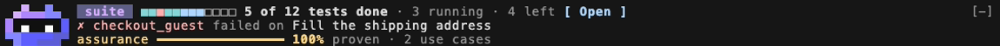</div>
      <div class="state"><div class="name"><h3>More than one run</h3><p>One cell per run with counts; row 2 is <code>now</code> and each running test with its time.</p></div>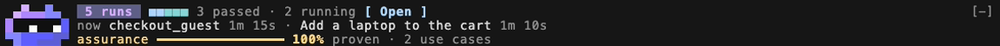</div>
      <div class="state"><div class="name"><h3>One run</h3><p>Its name, how long it has run, and the step it is on, with no step number.</p></div>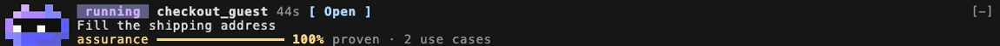</div>
      <div class="state"><div class="name"><h3>Idle, untested change</h3><p>Claude edited code and no kane-cli run has started since. In auto mode it reads “Claude will test this before it finishes”.</p></div>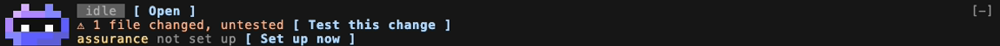</div>
      <div class="state"><div class="name"><h3>Idle, runs finished</h3><p>This session's passed and failed counts; the newest failure and its step.</p></div>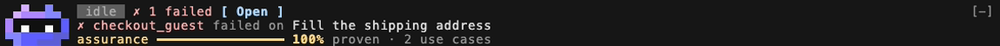</div>
      <div class="state"><div class="name"><h3>Idle, nothing run</h3><p>The last result in this project from an earlier session, or empty.</p></div>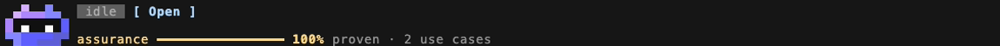</div>
    </div>
  </section>

  <section aria-labelledby="pane-h">
    <div class="eyebrow">The pane</div>
    <h2 id="pane-h">Runs, steps and assurance</h2>
    <div class="gallery">
      <figure>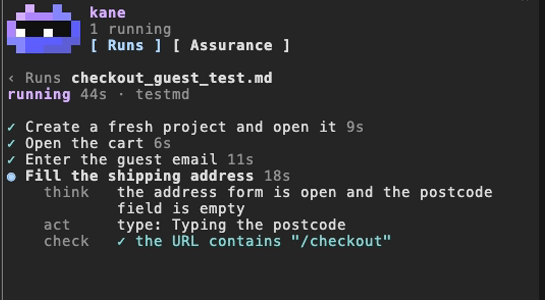<figcaption><b>A run's steps.</b> Done steps with a tick and their time; the step being worked on opens to what the agent thinks, the action it took and each check.</figcaption></figure>
      <figure>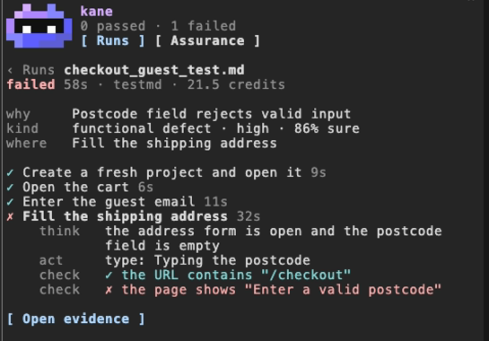<figcaption><b>A failed run.</b> why, kind (category · severity · how sure) and where, from kane's verdict; the failing check in red; <i>Open evidence</i> asks Claude to open it.</figcaption></figure>
      <figure>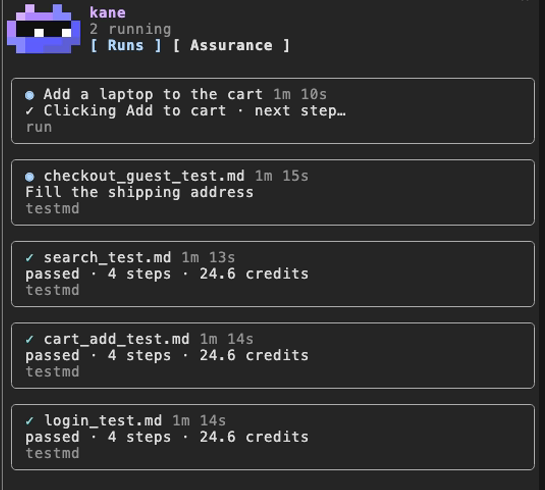<figcaption><b>Several runs.</b> A card per run, failed first, then running, passed, waiting. Finished runs sink below running ones.</figcaption></figure>
      <figure>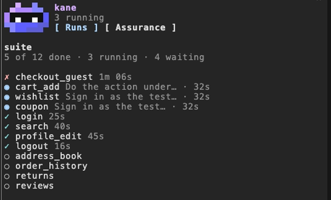<figcaption><b>A suite.</b> One row per test in the plan's order within each state; running ones show their step and time.</figcaption></figure>
      <figure>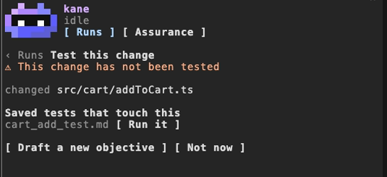<figcaption><b>Test this change.</b> The changed files and the saved tests that touch them, with their last result. With none, Claude drafts an objective from the diff.</figcaption></figure>
      <figure>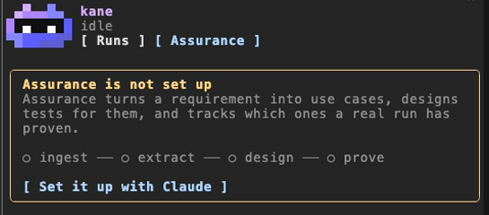<figcaption><b>Assurance.</b> With a requirement store: designed and proven bars, failing and blocked, last run, a card per use case. Without: an offer to set it up.</figcaption></figure>
    </div>
  </section>

  <section aria-labelledby="flows-h">
    <div class="eyebrow">Flows</div>
    <h2 id="flows-h">How it works</h2>
    <div class="flows">
      <div class="flow">
        <h3>Watching kane-cli</h3>
        <pre class="mermaid">
flowchart TD
  A["Claude, a terminal or a script<br/>runs kane-cli in this project"] --> B["kane-cli writes a pointer<br/>and events.ndjson"]
  B --> C{"Every second: a pointer<br/>inside this project, pid alive?"}
  C -- "no" --> X["Not shown"]
  C -- "yes" --> D["Read the new lines<br/>(from the last byte read)"]
  D --> E["adapter.ts: wire line → event<br/>unknown types skipped"]
  E --> F["model.ts: events → runs<br/>runs → band rows"]
  F --> G["Band and pane redraw"]
  D -. "suite member with its own log" .-> D
        </pre>
        <p>The only place raw kane-cli field names appear is the adapter, so a kane-cli release that adds events cannot break the display.</p>
      </div>
      <div class="flow">
        <h3>A run's life on the band</h3>
        <pre class="mermaid">
flowchart TD
  I["Idle"] -- "a pointer appears" --> R["Running<br/>step by step"]
  R -- "ask_user" --> W["Waiting<br/>for an answer"]
  W -- "answered" --> R
  R -- "passed" --> P["✓ counted<br/>on row 1"]
  R -- "failed: verdict read" --> F["✗ on row 2<br/>with its step"]
  R -- "process gone,<br/>no result" --> F
        </pre>
        <p>A killed kane-cli leaves no result: once its pointer and process are gone, the run ends as failed with that reason.</p>
      </div>
      <div class="flow">
        <h3>After Claude changes code</h3>
        <pre class="mermaid">
flowchart TD
  A["Claude edits a file<br/>(edit tools or shell)"] --> B{"Doc, hidden tool folder<br/>or git-ignored?"}
  B -- "yes" --> Z["Not counted"]
  B -- "no" --> C["Change noted"]
  C --> D{"Turn ends:<br/>after-change mode"}
  D -- "off" --> Z2["Nothing"]
  D -- "offer" --> E["Band: ⚠ untested<br/>[ Test this change ]"]
  D -- "auto" --> F["Claude held once:<br/>test it first"]
  E --> G["Card: saved tests that touch it<br/>(last result, Run it)<br/>or a drafted objective"]
  G --> H["Claude runs kane-cli"]
  F --> H
  H --> I["A run that started after<br/>the edit ends → warning clears"]
        </pre>
        <p>Auto holds Claude once per change. If the turn still ends untested, the band stops promising and offers the button.</p>
      </div>
      <div class="flow">
        <h3>Assurance on every screen</h3>
        <pre class="mermaid">
flowchart TD
  A["Session start,<br/>and after each run"] --> B{".context in<br/>the project?"}
  B -- "no" --> C["Row 3: not set up<br/>[ Set up now ]"]
  C --> D["Set it up with Claude:<br/>ingest → extract → design"]
  B -- "yes" --> E["kane-cli cover gaps --json<br/>(read-only, no credits)"]
  E --> F{"Anything run yet?"}
  F -- "yes" --> G["47% proven · 4 use cases"]
  F -- "no" --> H["82% designed · nothing run yet"]
  E --> I["Tab: bars, failing · blocked,<br/>a card per use case"]
        </pre>
        <p>Yellow is used for assurance and nothing else, so coverage reads the same wherever it appears.</p>
      </div>
    </div>
  </section>

  <section aria-labelledby="uc-h">
    <div class="eyebrow">Use cases</div>
    <h2 id="uc-h">Who it is for, and when</h2>
    <div class="tablewrap"><table>
      <thead><tr><th>When</th><th>What you get</th><th>Checked</th></tr></thead>
      <tbody>
        <tr><td>You ask Claude to test a flow</td><td>The band picks the run up and shows the step it is on. Nothing to type into the mod.</td><td><span class="tag live">live</span></td></tr>
        <tr><td>A run starts in a terminal, a script or CI on this machine</td><td>Shown the same way. Another project's runs, and processes that are gone, are not.</td><td><span class="tag live">live</span> <span class="tag">test</span></td></tr>
        <tr><td>A test fails</td><td>Which test, which step, kane's own reason and how sure it is, the failing check, the evidence.</td><td><span class="tag live">live</span></td></tr>
        <tr><td>Several flows in parallel, or a suite</td><td>Cells and counts, what is running now, failures as they happen, a row per test.</td><td><span class="tag live">live</span></td></tr>
        <tr><td>Claude changed code and is about to finish</td><td>A one-press test (offer), or Claude made to test it first (auto).</td><td><span class="tag live">live</span></td></tr>
        <tr><td>A saved test already covers the change</td><td>Offered first, with its last result, instead of a new objective.</td><td><span class="tag live">live</span></td></tr>
        <tr><td>Your team tracks requirement coverage</td><td>Proven and designed coverage on every screen, what each use case still owes, set-up when missing.</td><td><span class="tag live">live</span></td></tr>
        <tr><td>You come back the next day</td><td><code>last run ✓ login · 2h ago</code> for this project.</td><td><span class="tag live">live</span></td></tr>
        <tr><td>A light theme, a narrow terminal</td><td>A darker palette on light themes; every band row fits.</td><td><span class="tag">test</span> <span class="tag live">live</span></td></tr>
        <tr><td>kane-cli is upgraded</td><td>The display keeps working; a newer wire format says so instead of breaking.</td><td><span class="tag">test</span></td></tr>
      </tbody>
    </table></div>
  </section>

  <section aria-labelledby="rules-h">
    <div class="eyebrow">Guidelines</div>
    <h2 id="rules-h">How it behaves</h2>
    <div class="rules">
      <div><h3>It watches</h3><p>The mod never starts a test. Claude runs kane-cli, through your request or a button that asks Claude. The mod only reads.</p></div>
      <div><h3>Structured data only</h3><p>Pointer JSON and <code>events.ndjson</code> lines. kane-cli's human output is never parsed.</p></div>
      <div><h3>No guesses on screen</h3><p>What kane-cli does not report is left out: no step totals, no credits while a run goes, no balance, no browser name.</p></div>
      <div><h3>Ignore what it does not know</h3><p>Unknown events and fields are skipped; lines that are not JSON are counted; a newer wire format shows only the name and time.</p></div>
      <div><h3>This project only</h3><p>Runs whose folder is outside the session's project never appear.</p></div>
      <div><h3>Read-only commands</h3><p><code>kane-cli cover gaps --json</code>, <code>kill -0</code> to check a run is alive, <code>git check-ignore</code> and <code>git diff</code> for the change card. Nothing else.</p></div>
    </div>
  </section>

  <section aria-labelledby="cmd-h">
    <div class="two">
      <div style="display:grid;gap:14px;min-width:0">
        <h2 id="cmd-h">Commands</h2>
        <div class="tablewrap"><table>
          <tbody>
            <tr><td><code>/kane</code></td><td>Open the pane</td></tr>
            <tr><td><code>/kane assurance</code></td><td>Open the Assurance tab</td></tr>
            <tr><td><code>/kane history</code></td><td>Open the History tab</td></tr>
            <tr><td><code>/kane auto</code></td><td>Claude tests a change before it finishes (this session)</td></tr>
            <tr><td><code>/kane ask</code></td><td>The band offers a test (this session)</td></tr>
            <tr><td><code>/kane off</code></td><td>Nothing after a change (this session)</td></tr>
          </tbody>
        </table></div>
      </div>
      <div style="display:grid;gap:14px;min-width:0">
        <h2>Settings</h2>
        <div class="tablewrap"><table>
          <thead><tr><th>Setting</th><th>Default</th></tr></thead>
          <tbody>
            <tr><td>After Claude changes code<br><span class="note">offer · auto · off</span></td><td><code>offer</code></td></tr>
            <tr><td>kane-cli command<br><span class="note">only for the read-only cover gaps</span></td><td><code>kane-cli</code></td></tr>
          </tbody>
        </table></div>
        <p class="note"><code>/config</code> → kane-qe. Colours follow Claude Code's theme: the design's palette on dark, a darker one on light.</p>
      </div>
    </div>
  </section>

  <section aria-labelledby="design-h">
    <div class="eyebrow">Design coverage</div>
    <h2 id="design-h">Built to the design, and checked against it</h2>
    <p>v2 was built from the kane-cli mod design: 17 features, 13 screens and a build spec. Every feature and screen was compared in a real terminal with the design's screenshots, and 103 tests cover the rest. The full list, with how each item was checked, is in <a href="https://github.com/LambdaTest/kane-claude-plugin/blob/main/guide/v2/design-coverage.md">design-coverage.md</a>.</p>
    <div class="two">
      <div class="callout"><h3>Two deliberate differences</h3><p>The design lists a test file's coming steps; kane-cli reports no step total, and the spec says never to show one. The design's cards say “Chrome 154”; kane-cli reports no browser name for desktop runs.</p></div>
      <div class="callout warn"><h3>Not checked yet</h3><p>The desktop app: the band and pane are tested on its surface, with the mascot as an image, but were not opened in the app itself.</p></div>
    </div>
  </section>

  <section aria-labelledby="install-h">
    <div class="eyebrow">Getting it</div>
    <h2 id="install-h">Install</h2>
    <div class="two">
      <div class="callout"><h3>Load the mod</h3><p><code>/plugin marketplace add LambdaTest/kane-claude-plugin</code>, then <code>/plugin install kane-qe@lambdatest</code>. Or from a clone: <code>claude --plugin-dir kane-claude-plugin/kane-qe</code>.</p></div>
      <div class="callout"><h3>Sign in to KaneAI</h3><p><code>npm install -g @testmuai/kane-cli</code>, then <code>! kane-cli login --oauth</code> from the Claude prompt. Then ask Claude to test something.</p></div>
    </div>
  </section>

  <footer>kane-qe v2 · built for kane-cli 0.8.20 (v16) · LambdaTest.</footer>
</main>

<script>
  // Chapters of the walkthrough (seconds from the start of the video).
  const CHAPTERS = /*CHAPTERS*/[{"t": 0.0, "title": "The band", "detail": "Always above the prompt: kane-cli is idle, and row 3 is requirement coverage. Nothing to start."}, {"t": 5.0, "title": "Claude runs a test, the band follows", "detail": "Ask Claude; within two seconds the band shows the run, its time and the step it is on. The mascot moves while it runs."}, {"t": 60.2, "title": "The pane: runs and steps", "detail": "/kane opens it. Press a run for its steps with their times."}, {"t": 73.5, "title": "Several runs at once, and a failure", "detail": "Runs started anywhere in this project: one cell per run, what is running now; a failure takes row 2 the moment it happens."}, {"t": 110.2, "title": "Why it failed", "detail": "kane\u2019s own verdict: why, what kind, how sure, where; the steps; Open evidence."}, {"t": 122.6, "title": "A suite", "detail": "kane-cli testrun: one cell per test, done \u00b7 running \u00b7 left; one row per test in the pane."}, {"t": 145.1, "title": "After Claude changes code", "detail": "An edit and no test since: the band warns. The card offers the saved test that covers it, with its last result."}, {"t": 170.9, "title": "Test the change", "detail": "Run it hands the saved test to Claude; when the run ends, the warning clears."}, {"t": 208.3, "title": "Assurance", "detail": "Designed and proven coverage from kane-cli cover gaps, and what each use case still owes."}, {"t": 219.6, "title": "End", "detail": "kane-qe v2: a band that watches kane-cli, a pane for runs and assurance, and a nudge to test what Claude changed."}];
  const list = document.getElementById('chapters');
  const video = document.getElementById('tour');
  const fmt = s => `${Math.floor(s / 60)}:${String(Math.floor(s % 60)).padStart(2, '0')}`;
  for (const ch of CHAPTERS) {
    const li = document.createElement('li');
    const b = document.createElement('button');
    b.type = 'button';
    b.innerHTML = `<span class="t">${fmt(ch.t)}</span><span class="c"><b></b><span></span></span>`;
    b.querySelector('.c b').textContent = ch.title;
    b.querySelector('.c span').textContent = ch.detail;
    b.addEventListener('click', () => { video.currentTime = ch.t; video.play().catch(() => {}); });
    li.appendChild(b);
    list.appendChild(li);
  }
  video.addEventListener('timeupdate', () => {
    const now = video.currentTime;
    let current = -1;
    CHAPTERS.forEach((c, i) => { if (now >= c.t) current = i; });
    [...list.querySelectorAll('button')].forEach((b, i) => b.setAttribute('aria-current', String(i === current)));
  });
</script>

<script>
  // Diagrams: claude.ai renders <pre class="mermaid"> itself; anywhere else (GitHub Pages)
  // load mermaid once and draw the ones still showing as text.
  window.addEventListener('load', () => setTimeout(() => {
    const pending = [...document.querySelectorAll('pre.mermaid')].filter(p => !p.querySelector('svg') && !p.dataset.processed);
    if (!pending.length) return;
    const s = document.createElement('script');
    s.src = 'https://cdn.jsdelivr.net/npm/mermaid@11.4.1/dist/mermaid.min.js';
    s.onload = async () => {
      // Measure labels in the page's own font: drawn before it loads, the boxes come out too narrow.
      await document.fonts.ready
      const dark = matchMedia('(prefers-color-scheme: dark)').matches && document.documentElement.dataset.theme !== 'light';
      window.mermaid.initialize({ startOnLoad: false, theme: dark ? 'dark' : 'neutral', fontFamily: 'Source Sans 3, sans-serif', flowchart: { padding: 14, wrappingWidth: 220 } });
      // Render each diagram from its own source into its own box, one at a time. The browser turned
      // the "<br/>" in the source into elements, so put them back as text before handing it over.
      ;(async () => {
        let i = 0
        for (const node of pending) {
          const copy = node.cloneNode(true)
          copy.querySelectorAll('br').forEach(br => br.replaceWith('<br/>'))
          try {
            const { svg } = await window.mermaid.render(`kq-diagram-${i++}`, copy.textContent)
            node.innerHTML = svg
            node.dataset.processed = 'true'
          } catch (error) {
            console.warn('diagram did not render', error)
          }
        }
      })()
    };
    document.head.appendChild(s);
  }, 400));
</script>
